Alta a guifi.net
Objectius
En aquest pas veurem com fer l'alta d'usuari a guifi.net, com crear el nostre
node, donar d'alta el trasto o router i generar l'unsolclic.
Procediments
Tot comença per obrir el nostre navegador i visitar la pàgina de guifi.net. El primer que hem de fer és l'alta d'usuari per tal de crear
el nostre usuari dins la comunitat de guifi.net.
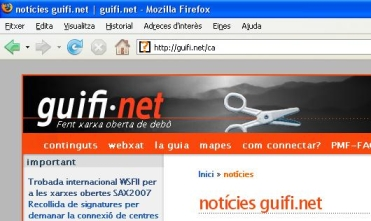
Per poder crear un nou usuari, cliquem a l'enllaç que posa crear un nou
compte d'usuari, que trobarem al menú lateral.
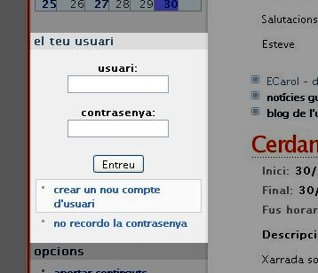
Això ens portarà a la pàgina el meu perfil, on haurem d'omplir les
nostres dades personals.
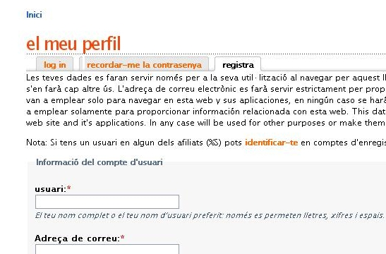
- Usuari: nom amb què ens identificarem a guifi.net
- Adreça de correu: adreça de correu electrònic per poder contactar amb
vosaltres
- Poble o ciutat: El poble d'on sou...
- Regió, província o comarca: La província d'on sou...
- Zip or postal code: el codi postal del vostre poble o ciutat
(OPCIONAL)
- URL of homepage: la direcció de la vostre pàgina web, blog,
el-que-sigui (OPCIONAL)
- Biography: La vostre biografia...(TOTALMENT OPCIONAL!!! :P )
- Interests: Què us agrada? (OPCIONAL)
Un cop s'ha omplert tota la informació premem al botó crear un nou compte
d'usuari
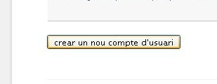
Ja tenim creat el nostre usuari!!!. Si ens fixem, al menú lateral on posava
crear un nou compte d'usuari, ara apareix el nostre nom d'usuari i unes quantes
opcions.
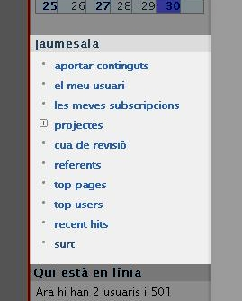
Ara ja podem anar per crear el nostre node. El node no és res més que la
informació d'on farem l'enllaç, cap a on ens connectarem i de quina manera.
Per poder crear el node anem a l'apartat de mapes, que trobarem al
menú superior.
Important: Abans d'anar a l'apartat de mapes ens hem d'assegurar que hem
entrat com a usuari, si no és així, escrivim el nostre nom d'usuari i
contrasenya i premem el botó entreu.
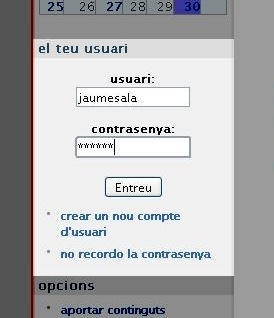
Després de clicar a mapes, ens apareixerà la següent pàgina. Aquesta pàgina ens
mostra tots els enllaços, punts d'accés, clients, que té la xarxa guifi.net.
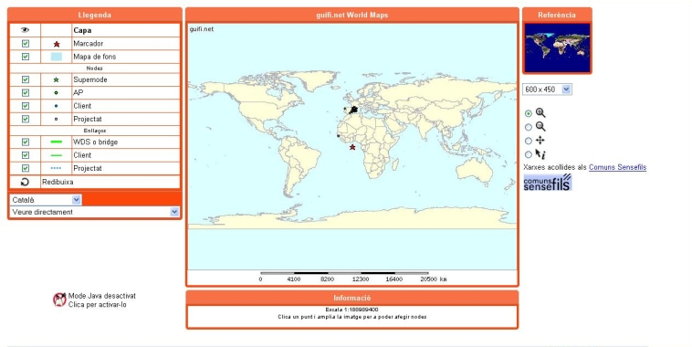
El que hem de fer és localitzar la situació geogràfica del lloc on volem muntar
el node ( és a dir, la teulada de casa nostre :P ). Per anar més ràpids podem
seleccionar el nom del nostre poble al desplegable que hi ha a l'esquerra.
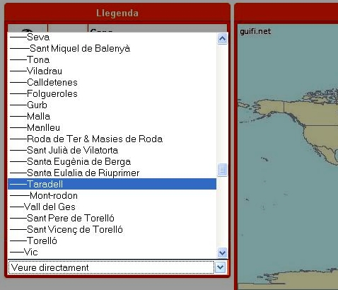
Anem fent zoom fins que col·loquem l'estrelleta de color vermell sobre el lloc
on anirà el node (la teulada...).
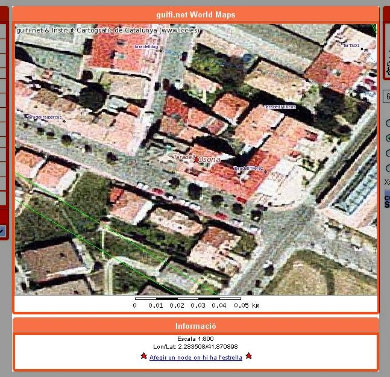
Un cop tenim localitzada la situació cliquem a l'enllaç que hi ha a sota del
mapa, que diu afegir un node on hi ha l'estrella. Això ens portarà
ala següent pàgina.
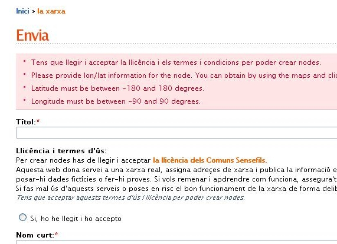
En aquesta pàgina hem de omplir les dades del nostre node.
- Títol: El nom del nostre node.
- Nom curt: El nom curt per accedir directament a la pàgina
d'informació del node des de guifi.net.
- Contacte: correu electrònic de contacte, de la persona responsable
del node (OPCIONAL).
- Barri,zona: Lloc on està situat el node (OPCIONAL).
- Longitud i Latitud: Les coordenades geogràfiques (NO CAL TOCAR
RES!!!, ja les ha agafat del mapa anterior).
- Descripció de la zona: La direcció d'on hi ha el node (OPCIONAL).
- Alçada de l'antena: Alçada aproximada de l'antena des del terra
(OPCIONAL).
- Tens intenció de que sigui un node sempre connectat?: Triem l'opció
que més us convingui (Habitualment SI).
- Cos: Aquí podeu posar altres dades informatives de que disposarà el
node (OPCIONAL).
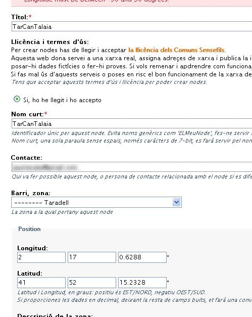